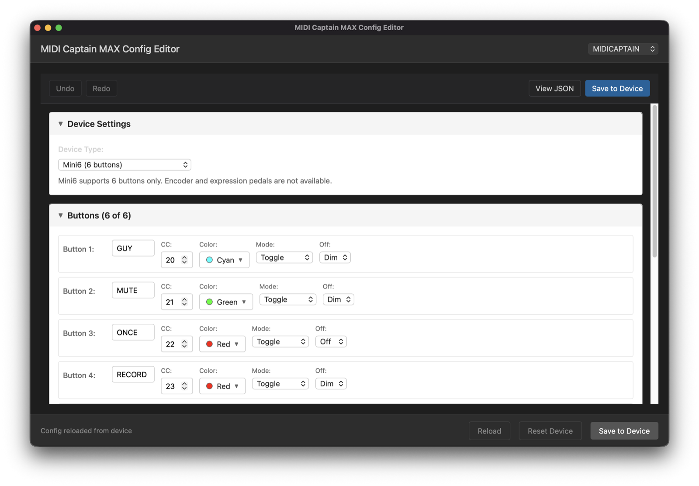

Open firmware for the Paint Audio MIDI Captain. Bidirectional MIDI, a visual config editor, and one-click install — your controller, finally under your control.
Based on the firmware's default config. Tap VERB for reverb, hold it ½ s for shimmer. Page switching: hold the top-right switch (TREM) for ½ s. Click any label to rename it.
loading the firmware engine…
The macOS and Linux apps are fully signed and launch out of the box; the Windows build isn't signed yet, so expect a SmartScreen warning. Prefer .msi, .deb, or arm64? They're on the release page.
Your DAW or plugin host can drive the device's LEDs and display — not just listen to button presses. State on stage, always in sync.
Labels, CC numbers, colors, short/long press actions — all edited in a desktop app for Mac, Windows, and Linux. No JSON required.
CircuitPython firmware with full source on GitHub, documented hardware internals, and one-click install straight from the editor.
Tap = reverb on/off. Hold ½ second = shimmer mode.
loading the firmware engine…
⚡ Live: this switch is running the firmware's actual button.py in your browser.
This is a very active project — features move across the board every week, and the maintainer actually answers issues. Watch it happen live on the public Kanban board.

Point, click, stomp. The editor installs the firmware and pushes your config to the device.
On the repo, choose Watch → Custom → Releases to get an email for every release. Feed reader? Releases Atom feed.
Say hi in Discussions — setup help, config show-and-tell, feature ideas. The maintainer reads everything.
Open an issue. Bug reports with a config attached get fixed fastest.